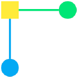
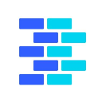
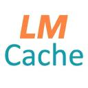
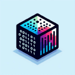
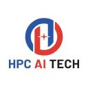
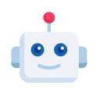
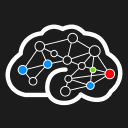

Icon review sheet
Manual review (39)
5 Midjourney
favicon_service22 Llama 3.1
favicon_service 31 BGE-M3
31 BGE-M3
domain_favicon39 Hugging Face Hub
domain_favicon51 GitHub Copilot
official_website 61 Leonardo.Ai
61 Leonardo.Ai
favicon_service 102 QuillBot
102 QuillBot
favicon_service116 Tabnine
favicon_service220 StarCoder2
domain_favicon279 MMS (Massively Multilingual Speech)
favicon_service319 Code Llama
favicon_service359 Framer AI
favicon_service365 ManyChat AI
favicon_service368 Llama 2
favicon_service418 StarCoder
domain_favicon468 Llama 3.3 70B
favicon_service518 Llama 3.2-Vision
favicon_service562 FinChat
favicon_service564 Glasp
favicon_service567 Ada
favicon_service571 Llama Guard 2
favicon_service572 Prompt Guard
favicon_service598 TorchCompile
favicon_service607 Tensor.Art
favicon_service610 Playground
favicon_service624 Chameleon 30B
favicon_service667 Vrew
favicon_service731 Stella EN 1.5B
domain_favicon732 Stella EN 400M
domain_favicon760 15Five
favicon_service773 Llama 3 70B
favicon_service840 Accelerate FSDP
domain_favicon857 Perfecto
favicon_service902 Lucidworks Fusion
favicon_service924 Omilia
favicon_service930 Level AI
favicon_service934 Freshworks Freddy AI
favicon_service962 Darktrace Cyber AI
favicon_service988 Komodor
favicon_service GitHub avatars sample (80/216)
 33 MusicGen
33 MusicGen
github_avatar47 llama.cpp
github_avatar81 XTTS-v2
github_avatar86 SGLang
github_avatar88 Unsloth
github_avatar89 Axolotl
github_avatar99 pgvector
github_avatar127 Bark
github_avatar129 BGE Reranker-v2
github_avatar131 InternVL 2.0
github_avatar135 Faiss
github_avatar
137 txtai
github_avatar139 Microsoft GraphRAG
github_avatar147 MLX
github_avatar183 Grounding DINO
github_avatar191 Text Generation Inference (TGI)
github_avatar193 KServe
github_avatar225 Depth Anything V2
github_avatar226 FastSAM
github_avatar228 ControlNet
github_avatar229 AnimateDiff
github_avatar231 InstantMesh
github_avatar232 Chronos
github_avatar233 WhisperX
github_avatar237 Portkey
github_avatar242 Semantic Kernel
github_avatar245 FastChat
github_avatar246 Aphrodite Engine
github_avatar247 ExLlamaV2
github_avatar249 BabyAGI
github_avatar269 SmolLM2
github_avatar272 SeamlessM4T
github_avatar
275 MiniCPM-V
github_avatar276 Video-LLaVA
github_avatar286 ScaNN (Scalable Nearest Neighbors)
github_avatar287 DeepSpeed
github_avatar289 Torchtune
github_avatar290 TRL (Transformer Reinforcement Learning)
github_avatar291 Llama Guard 3
github_avatar321 LLaVA-1.5
github_avatar325 Latent Consistency Models (LCM)
github_avatar326 Distil-Whisper
github_avatar328 InstructPix2Pix
github_avatar330 YOLOS
github_avatar
336 LMCache
github_avatar343 FastMCP
github_avatar345 Marker
github_avatar347 Chonkie
github_avatar348 FlashAttention
github_avatar
349 bitsandbytes
github_avatar350 AutoGPTQ
github_avatar351 Tabby
github_avatar353 Aider
github_avatar374 HQ-SAM (High-Quality SAM)
github_avatar
377 Open-Sora
github_avatar 380 Point-E
380 Point-E
github_avatar381 Shap-E
github_avatar383 UniAudio
github_avatar387 GGML
github_avatar389 Text Embeddings Inference (TEI)
github_avatar391 MLC-LLM
github_avatar
424 OpenCodeInterpreter
github_avatar427 LLaVA-NeXT-Video
github_avatar428 Video-ChatGPT
github_avatar431 AudioLDM 2
github_avatar432 MusicGen-Melody
github_avatar434 AutoAWQ
github_avatar
435 GPTQModel
github_avatar436 llamafile
github_avatar437 TabbyAPI
github_avatar438 KTransformers
github_avatar442 Deepchecks
github_avatar445 Rebuff
github_avatar446 TextGrad
github_avatar447 Docling
github_avatar448 Semantic Router
github_avatar449 RouteLLM
github_avatar480 CRM (Convolutional Reconstruction Model)
github_avatar481 OpenShape
github_avatar482 MobileVLM
github_avatar